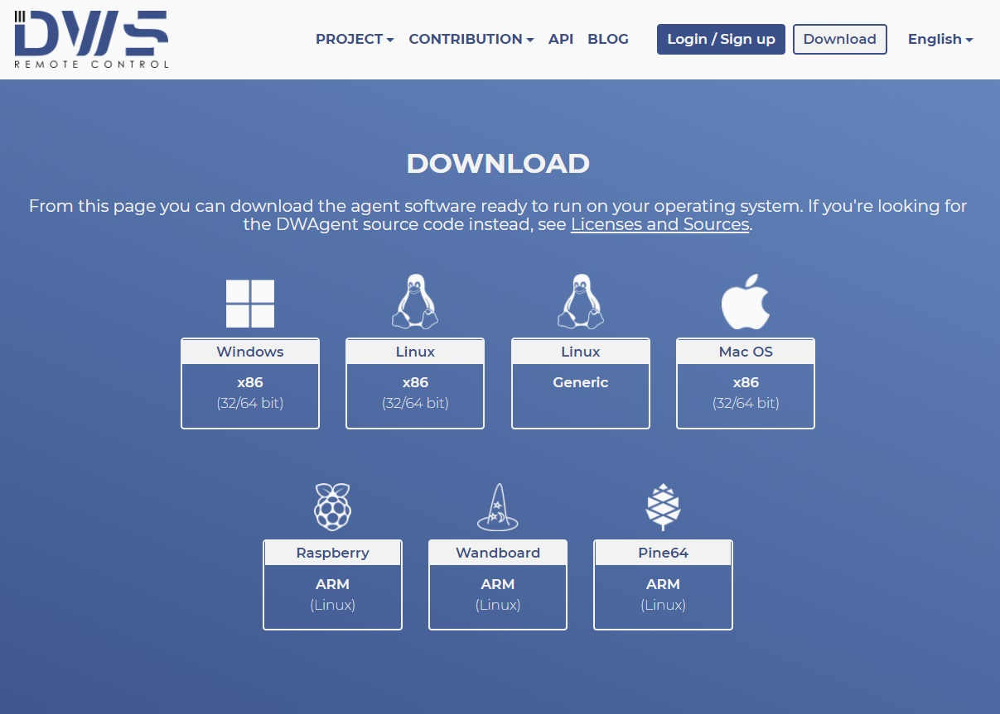
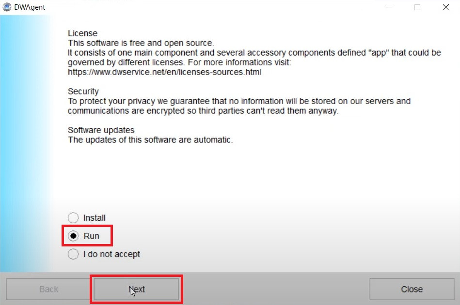
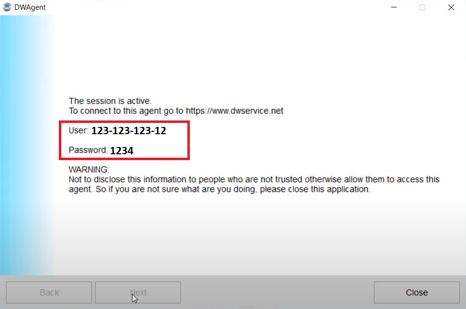
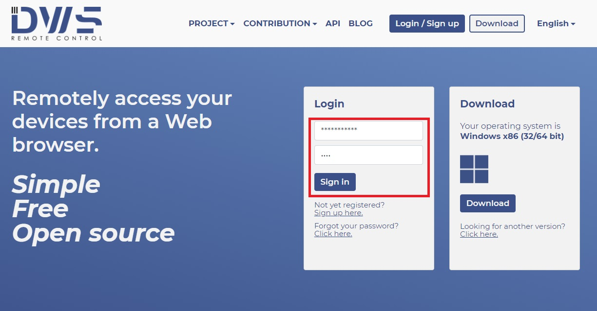
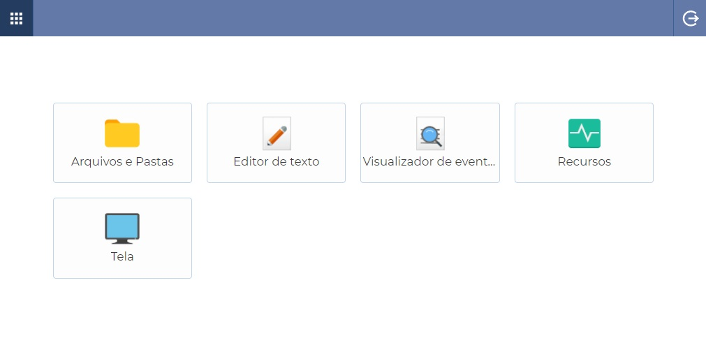
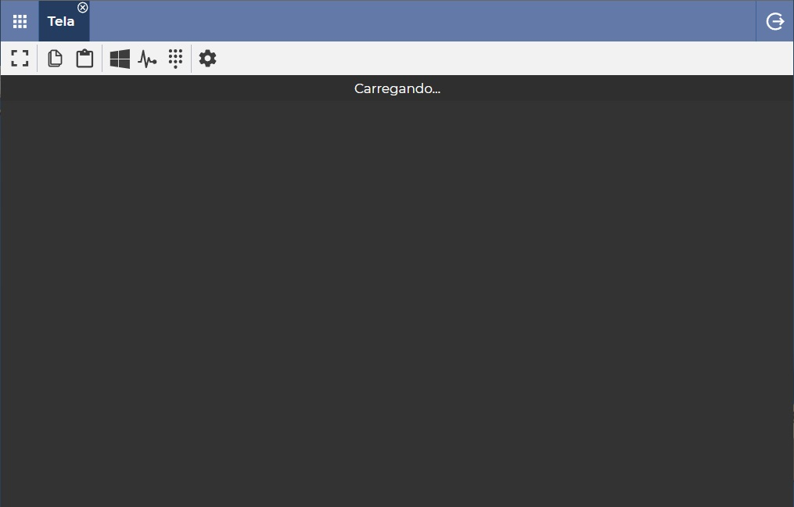

Suporte Remoto com DW Service
Introdução
Se você trabalha com t.i. sabe que cedo ou tarde não basta dar as direções ao seu colega/cliente, as vezes é necessário fazer você mesmo, e pra isso temos diversas opções de programas para suporte remoto... Mas todas elas tendem a ser OU A: Programas que tem uma complexidade desnecessária para um simples acesso e resolução de problemas para o usuário final (como o UltraVNC ou Remmina) OU B: Programas proprietários altamente suspeitos que deixem rastros para espionar o computador antes mesmo da inicialização e execução do programa (como TeamViewer ou AnyDesk).
E nesse mundo entre o complexo e o suspeito não resta alternativa para suporte remoto... Exceto com o imaculado DW Service! O DW service é um programa de suporte remoto simples, direto E open-source! É o melhor dos mundos e assim como o AnyDesk sequer requer a instalação, é a minha única opção de suporte remoto hoje.
Executando o DW Service
Na máquina do cliente:
Nesse link [aqui] você poderá baixar o executável para o computador que será acessado.

Assim que executar o aplicativo, basta selecionar Run e depois clicar em Next. Aguarde até que ele baixe os arquivos necessários e carregue a tela de informações de sessão.

A tela de informações de sessão vai informar o usuário e senha para a conexão na sua máquina

Na máquina do suporte:
Acesse este link [aqui] e insira o usuário e a senha da sessão

Na tela inicial você terá acesso a um gerenciador de arquivos, editor de texto, visualizador de eventos, análise de recursos da máquina e poderá acessá-la clicando em tela.

Ao acessar a máquina do usuário você terá atalho para Ctrl+Alt+Del ou mesmo acesso á área de transferência através dos botões na guia
